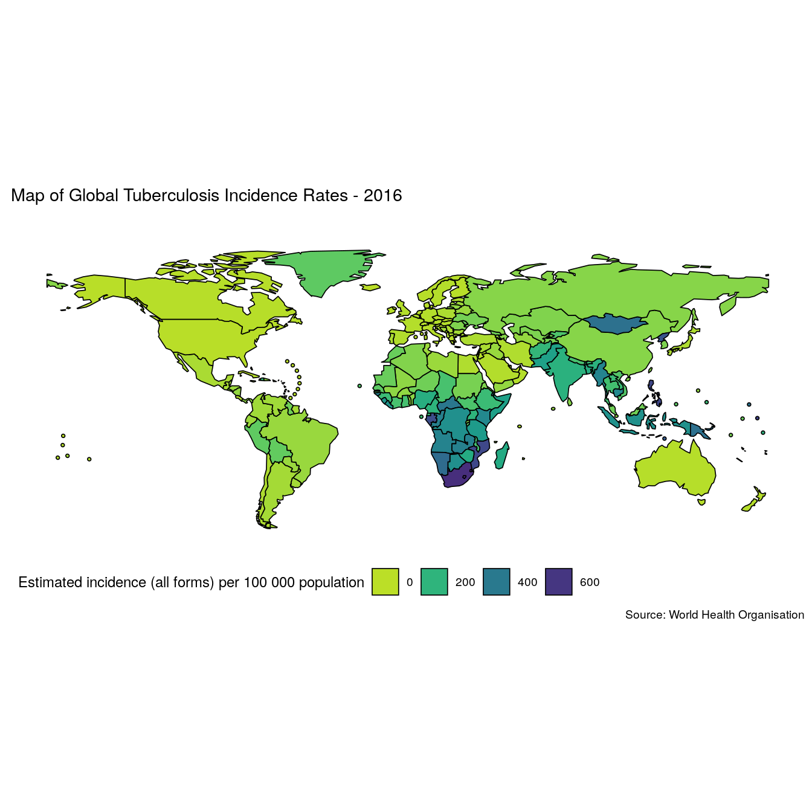
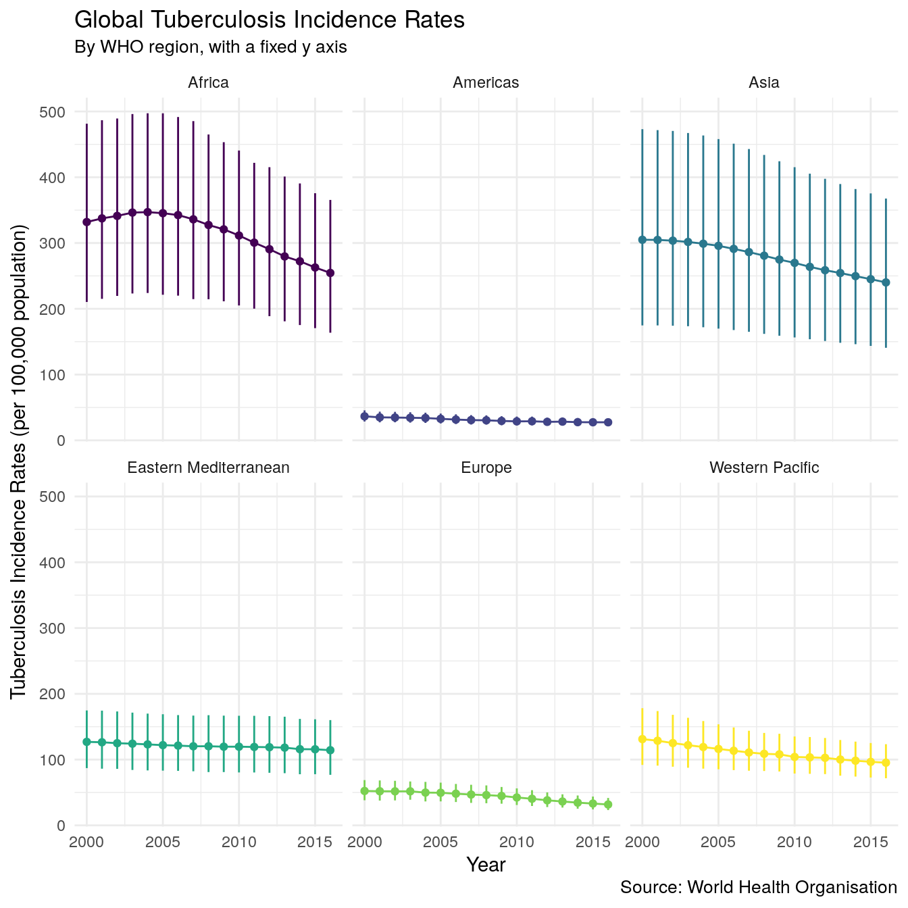
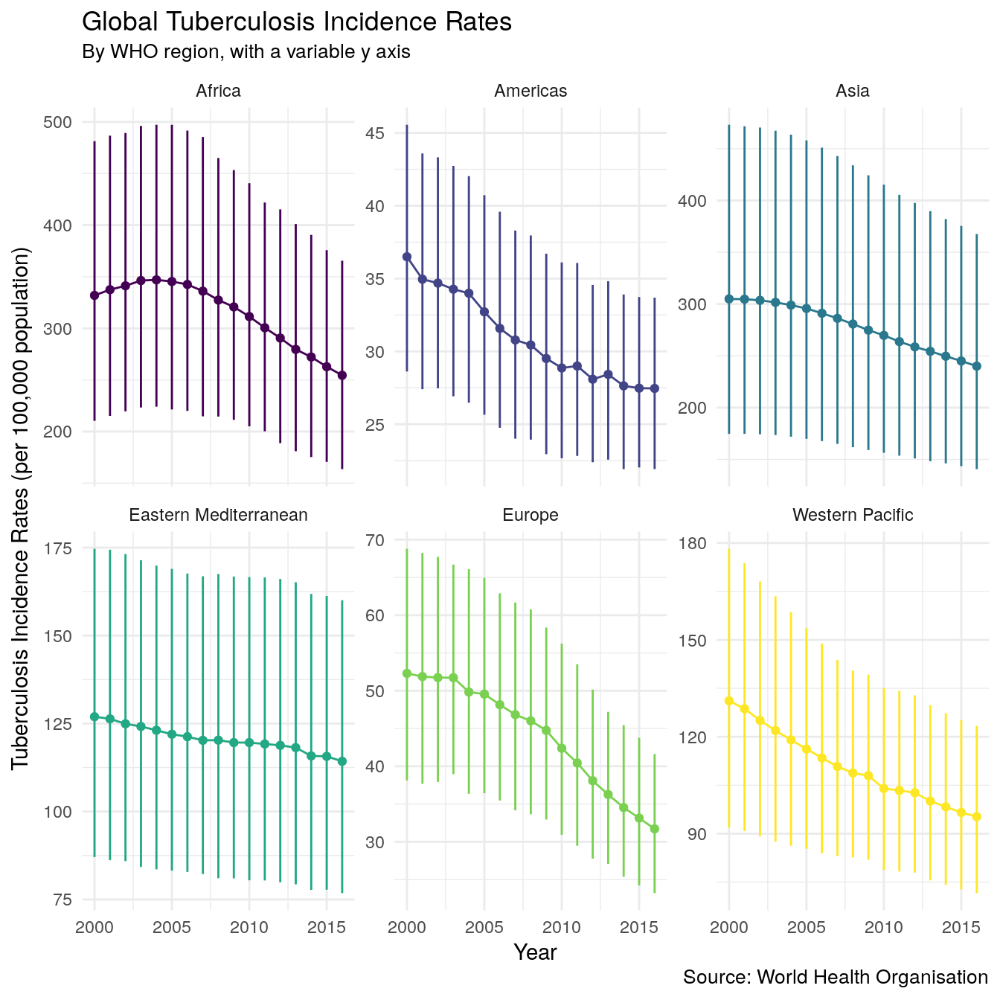
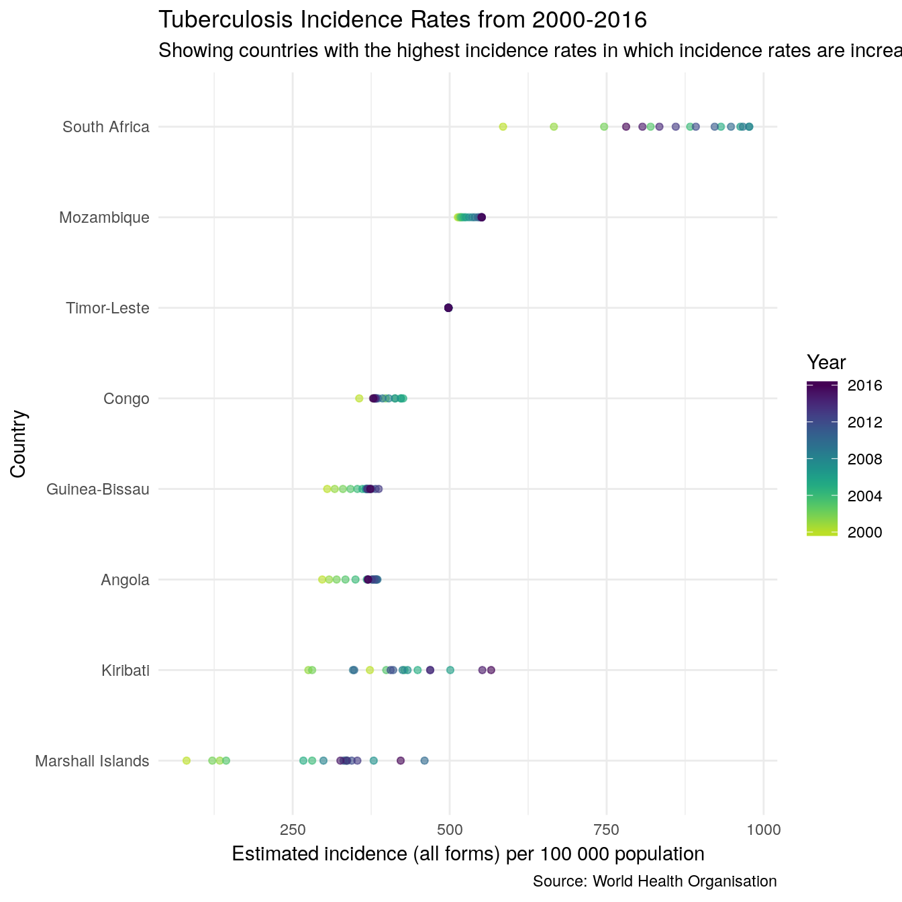
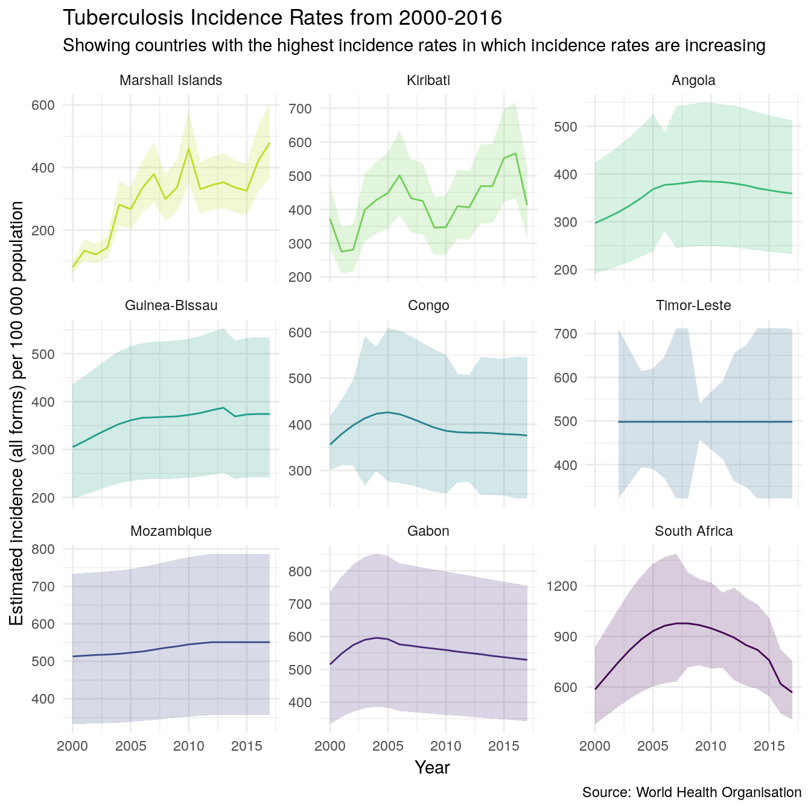
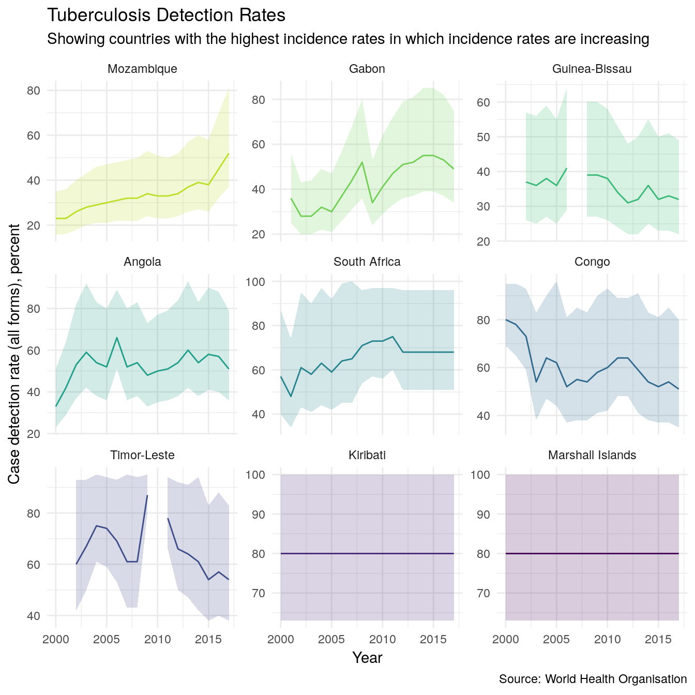

vignettes/case_study_global_trends.Rmd
case_study_global_trends.RmdThis case study investigates global trends in Tuberculosis incidence rates and explores whether Tuberculosis eradication is on the horizon. It was adapted from this blog post. To get started the first step is to get the package, as well as loading other packages required for the analysis.
# install.packages("getTBinR")
library(getTBinR)
# install.packages("tidyverse")
library(tidyverse)
# install.packages("viridis")
library(viridis)The package is loaded, time to get the data. We download both the data itself and it’s accompanying data dictionary.
tb_burden <- get_tb_burden()
dict <- get_data_dict()We want to explore incidence rates so we need to find them in the data. We can do this using the getTBinR::search_data_dict function,
search_data_dict(dict = dict, def = "incidence", verbose = FALSE) %>%
knitr::kable()| variable_name | dataset | code_list | definition |
|---|---|---|---|
| e_inc_100k | Estimates | Estimated incidence (all forms) per 100 000 population | |
| e_inc_100k_hi | Estimates | Estimated incidence (all forms) per 100 000 population, high bound | |
| e_inc_100k_lo | Estimates | Estimated incidence (all forms) per 100 000 population, low bound | |
| e_inc_rr_num | Estimates | Estimated incidence of rifampicin resistant TB (absolute number) | |
| e_inc_rr_num_hi | Estimates | Estimated incidence of rifampicin resistant TB (absolute number): high bound | |
| e_inc_rr_num_lo | Estimates | Estimated incidence of rifampicin resistant TB (absolute number): low bound | |
| e_inc_tbhiv_100k | Estimates | Estimated incidence of TB cases who are HIV-positive per 100 000 population | |
| e_inc_tbhiv_100k_hi | Estimates | Estimated incidence of TB cases who are HIV-positive per 100 000 population, high bound | |
| e_inc_tbhiv_100k_lo | Estimates | Estimated incidence of TB cases who are HIV-positive per 100 000 population, low bound | |
| e_inc_tbhiv_num | Estimates | Estimated incidence of TB cases who are HIV-positive | |
| e_inc_tbhiv_num_hi | Estimates | Estimated incidence of TB cases who are HIV-positive, high bound | |
| e_inc_tbhiv_num_lo | Estimates | Estimated incidence of TB cases who are HIV-positive, low bound |
The first hit, e_inc_100k, is the TB incidence rate, with the next two variables being the lower and upper bounds of this estimate. For a quick overview lets map country specific incidence rates in 2016 using the getTBinR function map_tb_burden,
map_tb_burden(df = tb_burden, dict = dict, year = 2016,
metric = "e_inc_100k", verbose = FALSE) +
labs(title = "Map of Global Tuberculosis Incidence Rates - 2016",
subtitle = "", caption = "Source: World Health Organisation")
This shows that incidence rates are highly heterogeneous between regions. To get an better understanding of this lets plot incidence rates by WHO region,
tb_inc_region <- tb_burden %>%
group_by(year, g_whoregion) %>%
summarise_at(.vars = vars(e_inc_num, e_inc_num_lo, e_inc_num_hi, e_pop_num),
.funs = funs(sum(as.numeric(.), na.rm = T))) %>%
mutate_at(.vars = vars(e_inc_num, e_inc_num_lo, e_inc_num_hi),
.funs = funs(inc_rate = . / e_pop_num * 1e5))
plot_tb_inc_region <- function(df = NULL, title = NULL, subtitle = NULL, scales = NULL) {
df %>%
ggplot(aes(x = year, y = e_inc_num_inc_rate, col = g_whoregion, group = g_whoregion)) +
geom_point() +
geom_linerange(aes(ymin = e_inc_num_lo_inc_rate, ymax = e_inc_num_hi_inc_rate)) +
geom_line() +
scale_colour_viridis(discrete = TRUE) +
labs(title = title, subtitle = subtitle,
x = "Year", y = "Tuberculosis Incidence Rates (per 100,000 population)",
caption = "Source: World Health Organisation") +
theme_minimal() +
theme(legend.position = "none") +
facet_wrap(~g_whoregion, scales = scales)
}
tb_inc_region %>%
plot_tb_inc_region(title = "Global Tuberculosis Incidence Rates",
subtitle = "By WHO region, with a fixed y axis",
scales = "fixed")
We see that incidence rates are much higher in Africa, and in Asia, than in other regions, and that incidence rates in the Americas and Europe are the lowest. This chart has a fixed y axis which makes it hard to see trends over time within regions, if we repeat it with a free y axis the trends over time become more apparent,
tb_inc_region %>%
plot_tb_inc_region(title = "Global Tuberculosis Incidence Rates",
subtitle = "By WHO region, with a variable y axis",
scales = "free_y")
This plot shows that Tuberculosis incidence rates are decreasing in all regions, which is a great sign for the elimination of Tuberculosis. However whilst this is true on the regional level it may not be true for all countries in the data set, something that is required to truly eradicate Tuberculosis. To explore this we find the countries that had higher incidence rates in 2016 than in 2000.
countries_inc_up <- tb_burden %>%
filter(year %in% c(2000, 2016)) %>%
group_by(country) %>%
arrange(desc(e_inc_100k)) %>%
slice(1) %>%
filter(year == 2016) %>%
pull(country)
high_inc_countries <- tb_burden %>%
filter(year == 2016) %>%
group_by(country) %>%
summarise(e_inc_100k = max(e_inc_100k)) %>%
ungroup %>%
arrange(desc(e_inc_100k)) %>%
slice(1:20) %>%
pull(country) %>%
unique
high_inc_up_countries <- intersect(countries_inc_up, high_inc_countries)This results in a list of 47 countries all of which had higher incidence rates in 2016 than in 2000. Of these countries 9 were in the top 20 countries by incidence rate in 2016. This can plotted below using getTBinR::plot_tb_burden_overview,
plot_tb_burden_overview(df = tb_burden,
dict = dict,
metric = "e_inc_100k",
countries = high_inc_up_countries,
verbose = FALSE) +
labs(title = "Tuberculosis Incidence Rates from 2000-2016",
subtitle = "Showing countries with the highest incidence rates in which incidence rates are increasing",
caption = "Source: World Health Organisation")
GetTBinR also supplies another function (plot_tb_burden) that can be used to visualise this,
plot_tb_burden(df = tb_burden,
dict = dict,
metric = "e_inc_100k", countries = high_inc_up_countries,
facet = "country", scales = "free_y", verbose = FALSE) +
labs(title = "Tuberculosis Incidence Rates",
subtitle = "Showing countries with the highest incidence rates in which incidence rates are increasing",
caption = "Source: World Health Organisation")
A possible cause of this may be that reporting of Tuberculosis notifications has improved over time, to understand this we first find the required variable in the data,
search_data_dict(dict = dict, def = "detection", verbose = FALSE) %>%
knitr::kable()| variable_name | dataset | code_list | definition |
|---|---|---|---|
| c_cdr | Estimates | Case detection rate (all forms), percent | |
| c_cdr_hi | Estimates | Case detection rate (all forms), percent, high bound | |
| c_cdr_lo | Estimates | Case detection rate (all forms), percent, low bound |
We then plot the case detection rate over time in the countries of interest,
plot_tb_burden(df = tb_burden,
dict = dict,
metric = "c_cdr", countries = high_inc_up_countries,
facet = "country", scales = "free_y", verbose = FALSE) +
labs(title = "Tuberculosis Detection Rates",
subtitle = "Showing countries with the highest incidence rates in which incidence rates are increasing",
caption = "Source: World Health Organisation")
The plot above shows that for some countries such as Mozambique and South Africa the increases in incidence rates may be linked to increases in the cases detection rate. However, it is clear that this is not the case for all countries, in particular the Congo which has seen increasing incidence rates and falling case detection rates.
This case study has highlighted the fact that whilst Tuberculosis is declining globally this is not the case in all countries. In order for the global eradication of Tuberculosis to be a success it is vital that resources are targeted at those countries which are struggling to reduce their incidence rates.